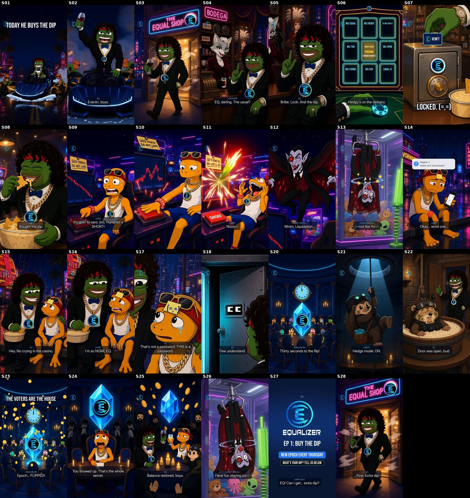

EQ · Ep 1 “Buy the Dip” · final tier
Kling 2.6 Pro motion + Wan 2.7 lip-sync · 9:16 · 58.9s · 27 shots · closed loop · v2, 23 Oct 2026 AEDT
What this is
- Changelog v2, 23 Oct 2026 AEDT: fixed the weak shots from v1. S01: the roadster now touches down with a splash. S02: “Evenin', boys” is lip-synced. S01–S02 and S22: the E is re-burned on EQ's medallion in every frame. S10: the stray red laser is painted out, so the zoom is looser. S16: a new wider plate, so EQ stays dry-eyed and both characters read. S21: a new Hedgy rappel that stays hedgehog. S12: a tighter Rekula plate. S03, S11, S20 and S23 are upgraded to Kling. The v1 cut is kept as a backup.
- Final-tier rebuild of the EQ preview, using the same plates, the EQ-renamed VO, logo tracking and mix spec. The animatic preview is still at eq-pepe-ep1-dip.
- Talking shots are lip-synced to the saved EQPepe voices with Wan 2.7: EQ (S02, S05, S08, S15, S25, S28), Contessa (S04), Larry (S09, S14, S16, S24) and Rekula (S12). The motion shots use Kling 2.6 Pro: the landing (S01), the shop exit (S03), the button slam and the candle punch-out (S10–S11), Rekula in the claw machine (S13/S26), the council chamber (S20/S23), and the Hedgy commando rappel and dip (S21/S22).
- S19, the '=' handshake, is cut: an AI version wouldn't give a real '=' handshake, and the cut helps the length.
- Mix: same spec as before (−14.5 LUFS, −1.7 dBTP, AAC 192k / 48 kHz, music ducked ~10 dB, one Thursday DING, da-da DING at the payoff and end card). The SFX are re-timed to the new landing, candle and rope cues.
- Runs ~58.8s, not ~56s. Every remaining shot is carried by its line, so getting to 56s would mean cutting S26 (Rekula's payoff) or a dialogue line.
- “Bribe the decks” is read as the vote-page bribe board. This is not yet confirmed with Blake.
Weak shots (cheap redo candidates)
- S06, S07, S17 and S18 are still coded animatic shots (not enough budget). S17 is the weakest: a 2.4–2.8× zoom that is soft.
- S21: Kling played the rope slide upward, so the shot runs reversed, then cuts to the landed crouch. The landing is a cut, not a continuous touchdown.
- S11: Larry is already horrified before the candle punches out, so the grin-to-horror change happens off-screen.
- S03: EQ's grin reads a little sly (the plate's expression).
Contact sheet

Shot list
| S01 | 0.00s | 1.50s | KLING K01c |
| S02 | 1.50s | 1.60s | WAN lip-sync (W02) |
| S03 | 3.10s | 1.00s | KLING K03 |
| S04 | 4.10s | 2.35s | WAN lip-sync |
| S05 | 6.45s | 3.05s | WAN lip-sync |
| S06 | 9.50s | 1.60s | animatic / coded |
| S07 | 11.10s | 1.50s | animatic / coded |
| S08 | 12.60s | 1.45s | WAN lip-sync |
| S09 | 14.05s | 2.75s | WAN lip-sync |
| S10 | 16.80s | 0.90s | KLING K11 (laser painted out) |
| S11 | 17.70s | 2.10s | KLING K11s |
| S12 | 19.80s | 2.62s | WAN lip-sync (W12t) |
| S13 | 22.42s | 1.30s | KLING K13 |
| S14 | 23.72s | 3.55s | WAN lip-sync |
| S15 | 27.27s | 2.45s | WAN lip-sync |
| S16 | 29.72s | 2.75s | WAN lip-sync (W16b) |
| S17 | 32.47s | 3.15s | animatic / coded |
| S18 | 35.62s | 1.65s | animatic / coded |
| S20 | 37.27s | 2.15s | KLING K20 + coded clock |
| S21 | 39.42s | 1.85s | KLING K21h |
| S22 | 41.27s | 3.30s | KLING K22 |
| S23 | 44.57s | 1.95s | KLING K20 + coded clock |
| S24 | 46.52s | 4.05s | WAN lip-sync |
| S25 | 50.57s | 1.60s | WAN lip-sync |
| S26 | 52.17s | 1.50s | KLING K13 |
| S27 | 53.67s | 2.60s | animatic / coded |
| S28 | 56.27s | 2.60s | WAN lip-sync |